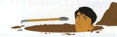
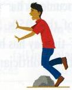
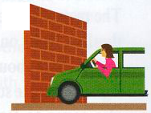
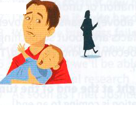
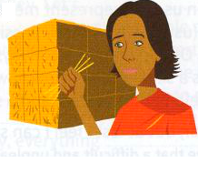

Bài tập
8.1 Nối phần đầu của mỗi thành ngữ ở cột trái với phần kết thúc ở cột phải.
- left holding the
- brick
- stumbling
- dire
- draw a
- have you over a
- face the
- wall
- block
- music
- baby
- barrel
- straits
- blank
8.2 Sắp xếp các từ theo đúng thứ tự và tạo thành câu hoàn chỉnh.
- done / said / Easier / than
- too / to / Try / spread / thin / not / yourself
- I / I / foot / it / wish / my / put / hadn't / in
- a / life / older / of / Getting / fact / is
- straits / The / is / company / dire / in
- life / primary / facts / of / the / Children / taught / in / school / are
8.3 Những bức tranh này khiến bạn nghĩ đến thành ngữ nào?
1

3

5

2

4

6
8.4 Hoàn thành mỗi thành ngữ sau với một từ.
- Bạn nên ngừng nói đi, nếu không bạn sẽ tự đào cho mình một cái hố sâu hơn (dig yourself into a deeper ........................ ).
- Tôi hy vọng sẽ tìm được địa chỉ cần thiết ở thư viện, nhưng tôi đã không tìm ra gì cả (drew a ........................ ).
- Nếu bạn nhận thêm việc nữa, bạn sẽ dàn trải bản thân quá ........................ (spreading yourself far too ........................ ).
- Bị mắc kẹt trên đảo không tiền bạc, không hành lý, chúng tôi biết rõ mình đang ở trong tình cảnh vô cùng khó khăn (in dire ........................ ).
- Cảnh sát đã truy tìm nhiều manh mối, nhưng mỗi lần họ đều gặp phải bức tường gạch (came up against a brick ........................ ).
- Không có đủ tiền tiết kiệm để mở doanh nghiệp là một trở ngại lớn (a major stumbling ........................ ).
- Tôi ước gì tôi có thể nghỉ việc, nhưng họ đã nắm thóp tôi rồi (got me over a ........................ ).
Đến lượt bạn
Các tạp chí thường có những bài viết về các vấn đề của mọi người hoặc các trang hỏi đáp giải quyết nhiều loại vấn đề khác nhau. Hãy tìm một bài viết hoặc trang hỏi đáp như vậy và ghi lại bất kỳ thành ngữ nào mà bạn tìm thấy ở đó.